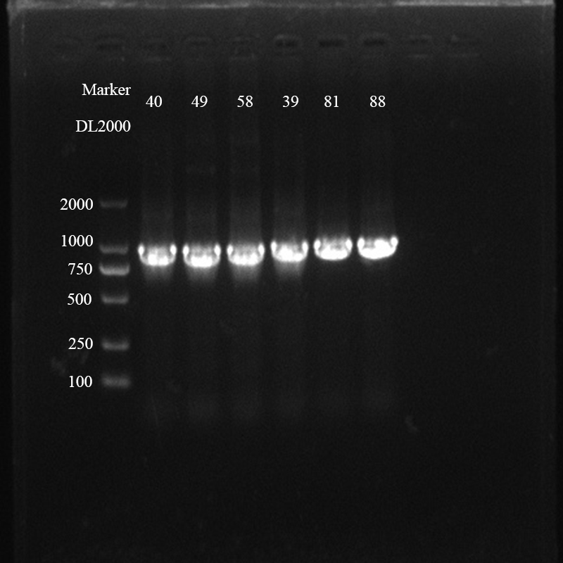
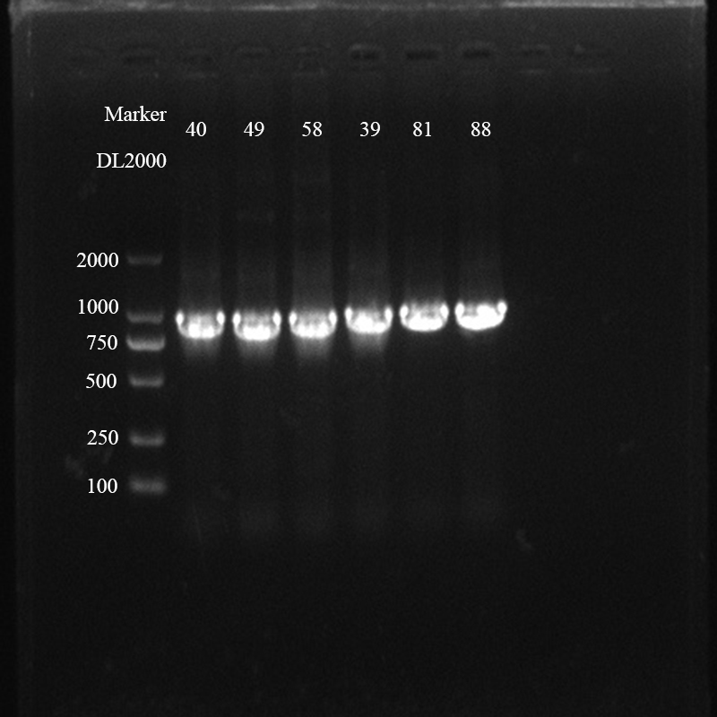

Day1


2023/9/8
Member: H.T.Q
Experiment:
1. FACS for round 2 (skip round 1)
2. Determination the naringenin response level of better mutants (1mM)
Resistance: KanR
Repetition*2 (2 96 deep well plate)
(1) Select 12 mutants and 2 positive and nagtive control of each plate and add naringenin to screen positive colonies
(2) Add 1mM naringenin
(3) Culture for 12h in biological shaker
Member: Z.M.L
Experiment:
1.Transform the plasmid of SP-2C3D-gen2 and SP-2C3D-T7RNAP into S2208 comepete cell and cultrue for 12h.
2.Isolation of the phage genome SP-SP-2C3D-gen2 and SP-2C3D-T7RNAP
Member: L.Y.X
Experiment:
FACS sorting
Result:
The sorting outcomes are not ideal，the fluorescence intensity of the variant is weaker than the negative control
Day3

2023/9/10
Member: H.T.Q
Experiment:
1. PCR to verfied wheather the fdeR could be amplified by our primers
①Template: 49, 40, 58, 39, 81, 88
② Enzyme: 2 × Rapid Taq Master Mix
③ 95℃ 30s
95℃ 15s
57℃ 20s
72℃ 18s
72℃ 5min
preservation at 4℃
2. Fastpure Gel DNA extraction from mutants named 49, 58, 39, 81, 88
Marker: DL 2000, 140V, 25min
Member: Y.Y.X
Experiment:
Transform the recombinant plasimds of pKD-pathway into BL21 competent cell.
Result:
No obvious colony.
Member: L.Y.X
Experiment:
Transferred plasmids to BL21，Bred in shaker at 200 rpm/min, 37 ℃ for 12 h.
Result:
3 mutants failed to transfer in BL21
Member: Z.M.L
Experiment:
1.Colony PCR to verify if the selected colonies containing the recombinant plasimd of AP-P-Mid2T7RNAP or AP-P-High2T7RNAP.
2.Plamisd extraction of AP-P-Mid2T7RNAP and AP-P-High2T7RNAP.
 


Day5

2023/9/12
Member: H.T.Q
Experiment:
1. Plasmid extraction for pQE-eGFP plasmids
5mL bacterial solution for one cetrifuge tube
2.Clonexpress
Vector: pQE-vec-1 (Add 9μL)
Insert fragment: ep-39,ep-49, ep-58, ep-81
3. Transform ep-39 (Add 9μL), ep-81, ep-49, ep-58 into BL21
Member: Z.M.L
Experiment:
1.Transform the plasmid of DP6 into S2060 competent cell.
2.Prepare 50 mL Glucose solution at the concentration of 1M.
Day7

2023/9/14
Member: H.T.Q
Experiment:
1. FACS 2.0 round 1
2. Dilute the bacterial solution and for plate culture
3. Prepare bacterial solution for FACS 2.0 round 2
Member: L.Y.X
Experiment:
Sequencing of 12 samples
Member: Z.M.L
Experiment:
1.Perfom FACS round 2.
2.The saturated bacterial solution of the plasmid of DP6 was diluted 1000-fold in the fresh 2×YT liquid medium and grown to OD600 of 0.5-0.7, and then was divided into 2 groups :one with 25mM Glucose and the other with 25mM arabinose.Culture them for 12h till saturation.


Day2

2023/9/9
Member: H.T.Q
Experiment:
1. Plasmids extraction
Select the 49, 40, 58 (best); 33,35,36,39.48,64,80,81,88 (better)
2.Determination the naringenin response level of better mutants (1mM)
(1) 600μL bacterial solution was centrifuged at 5000 rpm for 3 min after the induction culture completed, and then discard the supernatant. 600 μL cold PBS buffer was pipetted and resuspended for 2 times, and 200μL was taken into a 96-well fluorescent plate.
Additionally, PBS should be added either. (as bacground)
(2) Samples were taken from the and fluorescence detected with a microplate reader (Ex=482nm/ Ex=524nm and Ex=478nm/ Ex=516nm)
(3) Data analysis
Member: Y.Y.X
Experiment:
1.Strains with the plasmids of pKD-pathway in shaker at 200 rpm/min, 37℃.
2.Colony PCR to verfied if the selected colonies contain the recombinant plasmids of pKD-pathway.
Member: Z.M.L
Experiment:
1.PCR to verify the plasmids of SP-2C3D-gen2 and SP-2C3D-T7RNAPP
2.Preparation and autoclave sterilization of 750 mL LB liquid medium, 750 mL LB solid medium.
3.Autoclave sterilization of 10 μL, 200 μL, 1000 μL pipette tips, 1.5 mL, 2 mL, 15 mL centrifuge tubes, and 2 mL deep-well plate.
4.Transform the plasmid of AP-P-Mid2T7RNAP and AP-P-High2T7RNAP into DH5α competent cell, respectiveky.
Result:
1.Failed to construct the plasmid of SP-2C3D-T7RNAP.
Member: L.Y.X
Experiment:
1.Plasmid extraction: 12 mutants which had a better response to liquiritigenin
Member: L.Y
Experiment:
1.Fastpure Gel DNA extraction Of site-directed evolution Of H170W/H170Y/L268W.
Day4

2023/9/11
Member: H.T.Q
Experiment:
1. Error-prone PCR
① Template: 49, 40, 58, 39, 81, 88 (the band of 40 was messy)
② System: 30 μL in total (including 1μL Template, 1μL forward/reverse primers, 15μL 2×StarMut Random PCR Mix, 6μL StarMut Enhancer, 6μL Sterile Water )
③ Procedure: 95℃ 2min
94℃ 30s
57℃ 1min
72℃ 1min
72℃ 7min
preservation at 4℃
( Cycle 25 times from step 2 to step 4)
2. Fastpure Gel DNA extraction from mutants named 49, 58, 39, 81, 88
Marker: DL 2000, 140V, 25min
3. Verify the repeatability of high response of liquiritigenin of mutants (1mM)
① Add the 49, 40, 58, 33, 35, 36, 39, 48, 64 bacterial solution into LB*1mL in 1.5mL certifuge to culture until the OD600 reach to 0.6 (except 80, 81, 88 because the bacteria did not grow in LB)
② Add 25μL liquiritigenin (20mM) into bacterial solution to dilute to 1 mM
③ Culture them in biological shaker at 37 ℃ with shaking at 220rpm overnight
4. Preservation of mutants using a 50% glycerol solution at -80℃
Member: Z.M.L
Experiment:
1.Prepare 10 mL LG solution at the concentration of 20 mM.
2.PCR to verify the plasmids of SP-2C2D-gen2, SP-2C2D-T7RNAP, SP-2C3D-gen2 and SP-2C3D-T7RNAP.
3.PCR to verify if the selected colonies containing the recombinant plasmid of M13 phage genome.
Member: L.Y.X
Experiment:
1.9 mutants were sequenced
Result:
1.plasmid concentration was low, sequencing failure
Member: Y.Y.X
Experiment:
1.Preservation of strains with the recombinant plasimd of pKD-pathwayusing a 50% glycerol solution at -80℃
2.Sequenced the sequence of the recombinant
3.plasmid of pKD-pathway.
Transform the recombinant plasimds of
pKD-pathway into BL21 competent cell.
Day6

2023/9/13
Member: H.T.Q
Experiment:
1. Test-PCR for ep-81
Use the primers that used for error-prone PCR
2. Transform pQE-eGFP into BL21, and transform ep-39, ep-81, ep-49, ep-58 into BL21 again
3. Prepare bacterial solution for FACS 2.0 round 1
Member: L.Y.X
Experiment:
Re-shaked the bacteria and sent the
liquid for sequencing
Result:
Sequencing was failed
Member: Z.M.L
Experiment:
1.Pick single colonies containing the plasmid of DP6 and culture them in the 2×YT liquid medium till saturation.
2.Prepare 50mL Arabinose solution at the concentration of 1M and 4mL Rifampin solution at the concentration of 50mg/mL.